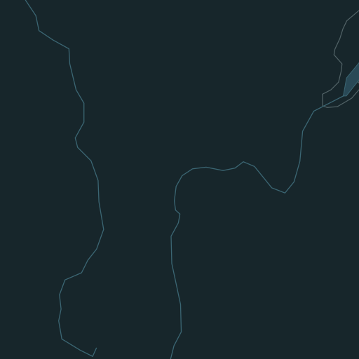

Autour de Lyon
20 km
Prévision estimée
Connexion à RainViewer…
Radar RainViewer · Fond Natural Earth · Communes geo.api.gouv.fr
Images observées sur la dernière heure, puis prévision estimée sur l’heure suivante en prolongeant le déplacement de la pluie, sans formation ni dissipation. L’heure indiquée est celle de la mosaïque ; les mesures locales peuvent être antérieures. Les zones sombres n’ont pas de couverture radar.